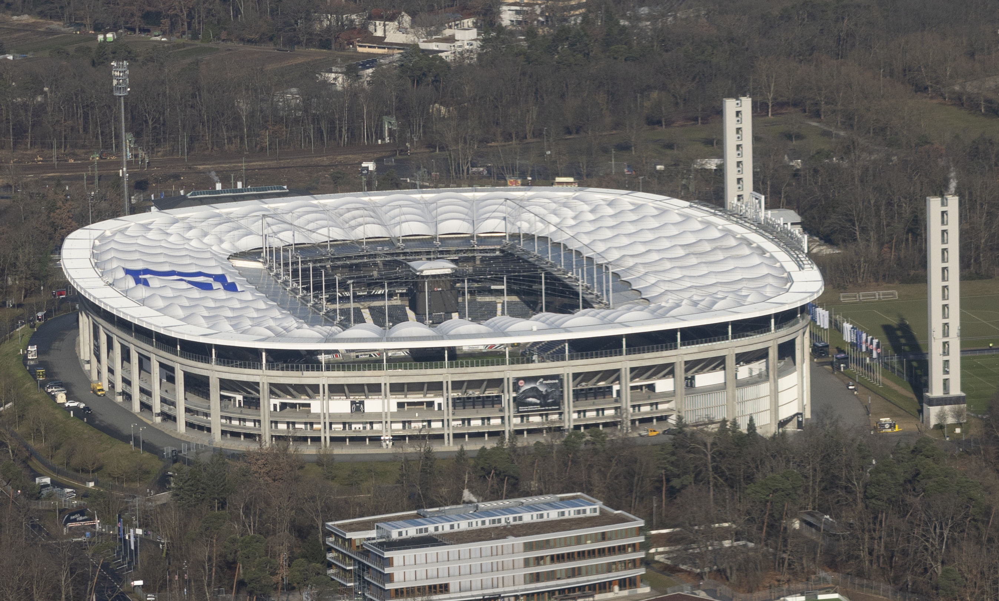

Kosta Runjaić é o atual treinador principal da Udinese Calcio, assumindo o comando técnico da equipa desde o verão de 2024. Nascido na Áustria mas com nacionalidade alemã, o técnico tem-se destacado na elite do futebol italiano pela sua abordagem tática moderna e liderança pragmática.
Estádio: Deutsche Bank Park
O Deutsche Bank Park é o imponente e tecnológico estádio do Eintracht Frankfurt. Situado no coração de uma densa área florestal a sul do rio Meno, este recinto combina quase um século de tradição desportiva com as mais modernas inovações de engenharia do futebol europeu.

Estilo de Jogo:
A Udinese de Kosta Runjaić pratica um futebol direto, rápido e defensivamente sólido, focado na alta intensidade e no forte jogo aéreo, preferindo o pragmatismo ofensivo ao domínio da posse de bola.
"Im Herzen von Europa!"